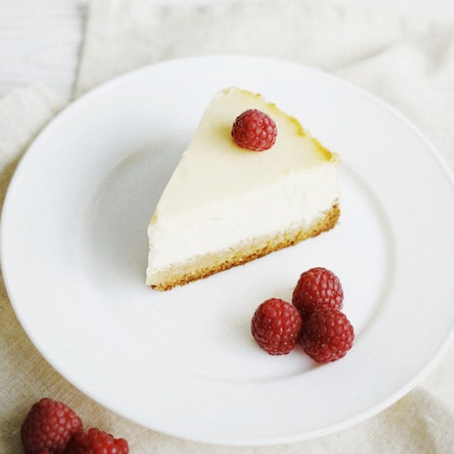

Cheesecake

Simple, Heavenly Cheesecake
Cheesecake can be a little intimidating to attempt, but this recipe makes it simple for anyone! Top it with your favorite fruit, or melt chocolate to drizzle over it. It's easy to make it gluten free - just use gluten free graham crackers for the crust.
Quick tip: Don't ignore the instructions for scraping the edges and letting it sit in the oven for 30 minutes after baking. This will help prevent the cake from cracking.
Crust
Ingredients
- 1 packet of graham crackers - Check out Pamela's brand for a gluten free option
- 1/2 cup sugar
- 1/2 tsp cinnamon
- 6 tbsp melted butter
Instructions
- Process graham crackers with sugar and cinnamon.
- Add butter to mixture and blend well.
- Press mixture into a greased 9" springform pan.
- Bake at 375F for 8 minutes and cool.
Cheesecake
Ingredients
All ingredients at room temperature.
- 2lb cream cheese
- 2 tbsp finely grated orange rind
- 1 tsp vanilla
- 1 1/3 cup sugar
- 4 eggs
Instructions
- Combine cream cheese, orange rind, and vanilla in a large mixing bowl. Beat at high speed until fluffy.
- Gradually add sugar, beating well.
- Add eggs, one at a time, beating well after each addition.
- Pour over baked crust.
- Bake at 350F for 50 minutes or until set.
- Shut off oven and prop open the door with a wooden spoon. Carefully slide a knife around the outside edge of the cheesecake to gently separate it from the edge of the pan. Leave cheesecake in oven for another 30 minutes.
- Cool cake thoroughly and refridgerate several hours.
- Serve with your preference of fresh fruit or chocolate on top.
Photo Credit Olena Sergienko - Unsplash